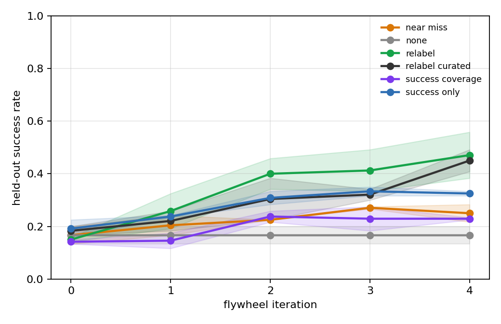
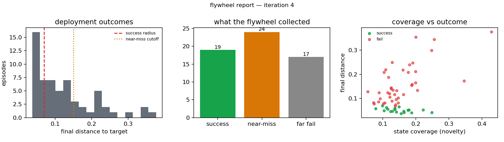
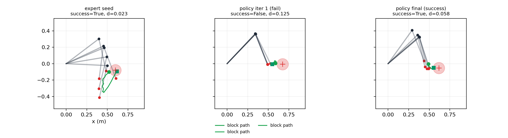
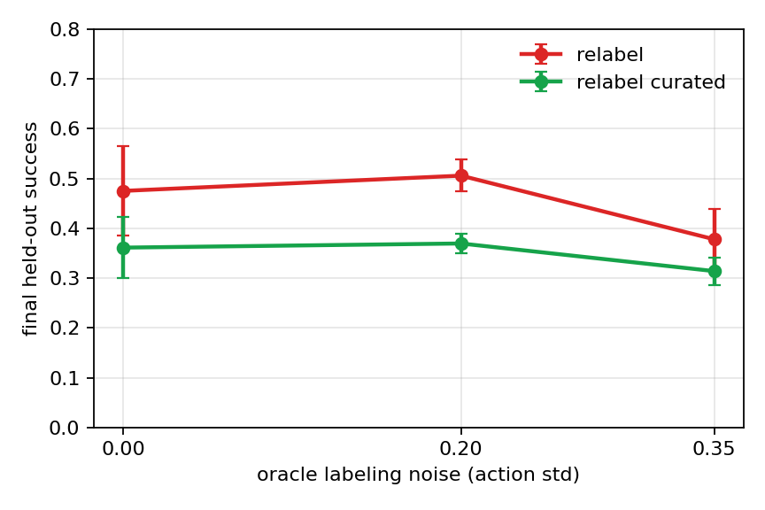
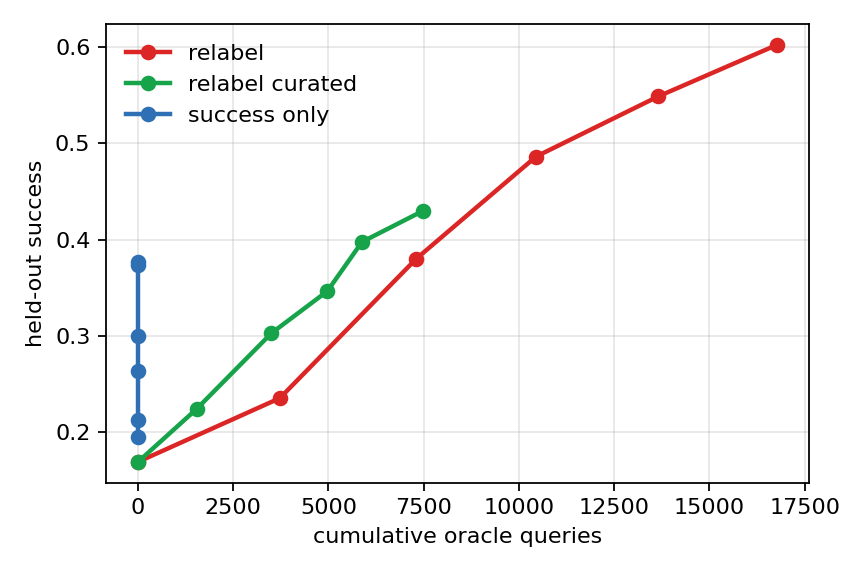

A data flywheel is a closed loop: deploy → collect → score → curate → retrain → repeat. This study isolates the one variable that decides whether the loop compounds — the curation rule. Paper: manuscript.pdf




